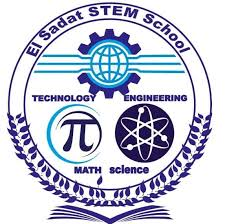
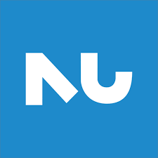

Welcome to Sadat STEM School – a place for innovation, creativity, and excellence in science and technology.

Sadat STEM School is one of Egypt’s leading schools for Science, Technology, Engineering, and Mathematics. It aims to prepare future leaders and innovators who can solve real-world problems using scientific thinking.
Students learn through real-life projects and experiments, not just memorization.
The school focuses on Science, Technology, Engineering, and Mathematics, helping students think creatively and logically.
Students work on national and local problems, such as energy, health, and environment, preparing them to find real solutions for Egypt’s future.
All teachers are trained to support research, teamwork, and critical thinking.
The program prepares students for top universities and future careers in science, technology, and engineering.
Students live and study together, learning cooperation, responsibility, and leadership.
The school has modern labs, computer rooms, and innovation spaces that make learning practical and fun.
Our school offers project-based learning in STEM fields, encouraging students to think critically and work collaboratively.
We provide modern labs, smart classrooms, and spaces that support creativity and teamwork.